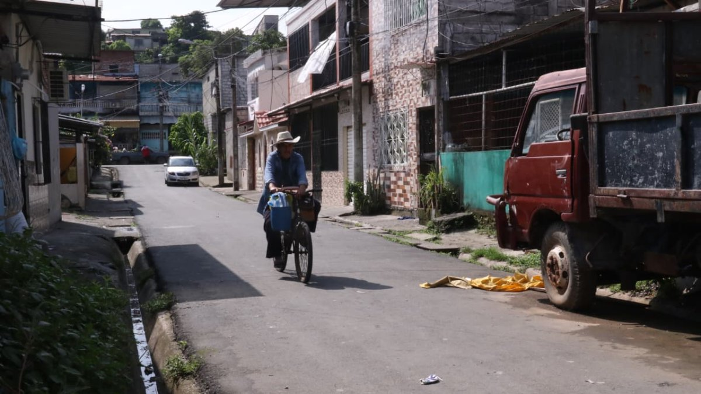

Como Nolberto Simón Rodríguez Angulo, de 42 años, fue identificado como el hombre hallado sin vida la tarde de este jueves 7 de mayo en la cooperativa Assad Bucaram, en Pascuales, norte de Guayaquil.
La víctima, oriunda de Esmeraldas pero residente en Guayaquil, fue encontrada tras ser abandonada desde una tricimoto. Su cuerpo presentaba las manos atadas con un cable USB negro y los pies amarrados con una manguera de gas de color azul. Tenía un proceso judicial por robo en el 2013.
En el sitio del hallazgo no fue identificado inicialmente; sin embargo, horas después sus familiares acudieron al lugar y confirmaron que se trataba de Rodríguez Angulo.
De acuerdo con información policial, al llegar al punto los agentes verificaron la presencia de un cadáver sobre la vía pública, con signos de haber recibido impactos de arma de fuego. El occiso vestía camiseta blanca y pantalón jean azul.
El hecho se reportó aproximadamente a las 16:50, cuando personal policial acudió al sector tras una alerta del ECU 911 sobre una persona sin vida. Una vez en el sitio, se confirmó el deceso y se coordinó el levantamiento del cuerpo con unidades especializadas.
Moradores, quienes prefirieron no identificarse por temor a represalias, señalaron que cerca de las 16:40 una tricimoto de color rojo llegó al lugar. Desde ese vehículo, sujetos desconocidos habrían abandonado a la víctima y le dispararon en al menos dos ocasiones, causándole la muerte de forma inmediata.
* Según cifras oficiales, entre el 1 de enero y el 8 de mayo, el distrito Pascuales —jurisdicción de la Zona 8— registra un total de 122 muertes violentas. (AEB)